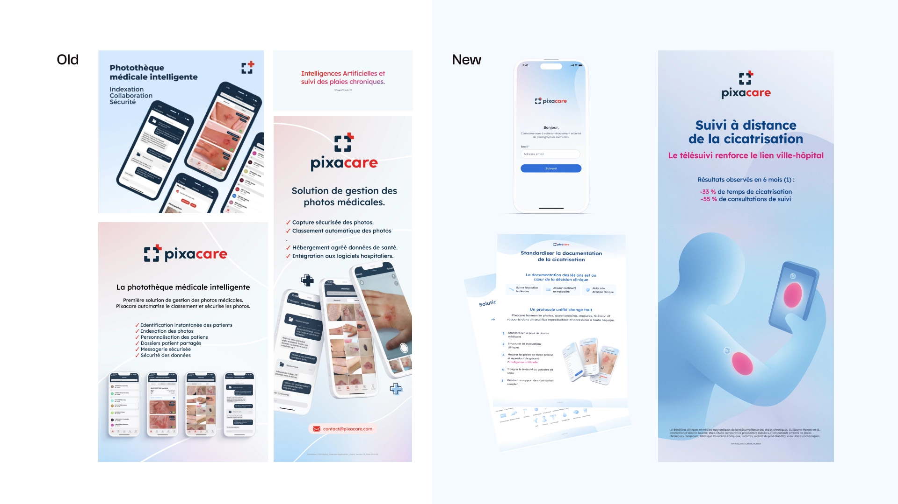
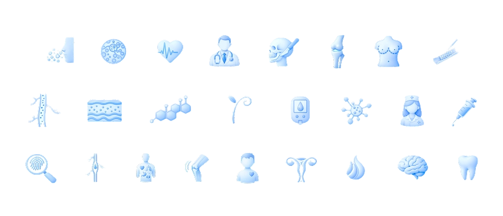

Pixacare est une startup MedTech spécialisée dans le suivi de plaies par imagerie médicale. Dans un secteur où la communication est souvent froide et stérile, l'enjeu était de refondre intégralement la direction artistique sur l'ensemble des supports — web, application, print et stands de congrès — sans sacrifier la crédibilité scientifique qui rassure les soignants.
J'ai repensé de fond en comble la palette colorielle, l'iconographie et la typographie pour insuffler chaleur et proximité à chaque point de contact. L'interface a été restructurée pour gagner en clarté et faciliter l'adoption par les équipes médicales. Résultat : une identité cohérente qui se déploie avec la même force sur un écran de smartphone et sur un stand de congrès médical.
